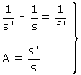
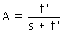

|
Una lupa es una lente convergente (f' positiva) Ecuaciones de la lente:  Relación del aumento con la posición del objeto:  De acuerdo con esta expresión, si el valor absoluto de s es un pelin menor que f' (Colocando el objeto un poco por delante del foco objeto) se obtendrá un aumento muy grande y positivo (Imagen virtual) |